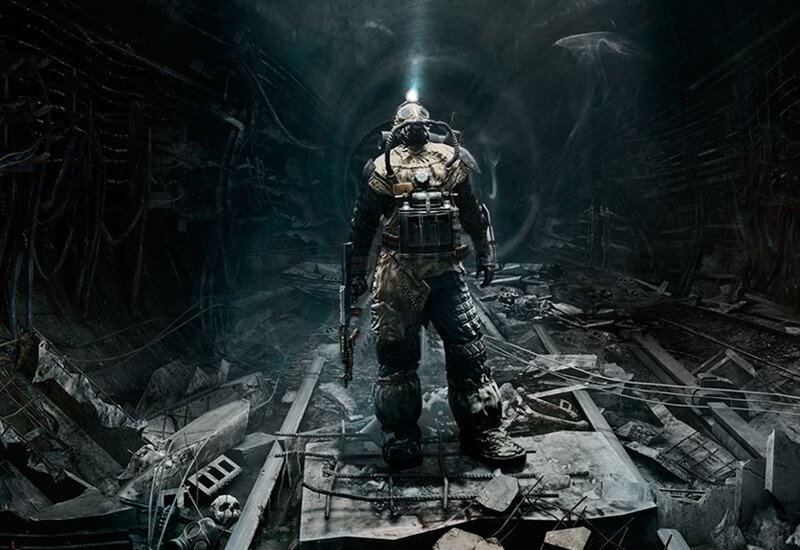

Metro: Last Light (Deep Silver) [RUS/2013][L|Steam-Preload]

By Neon
By Neon
თამაშის აღწერა:
Metro: LAst Light - პირველი პირის Survival Horror ტიპის თამაში, რომელიც პირდაპირი გაგრძელებაა თამაშისა Metro 2033, რომელიც შექმნილია კომპანია 4A Games-ის მიერ და გამოშვებულია THQ-ის მიერ. თამაშის მთავარი გმირი კვლავ იქნება Aptem(იდეაში რუსულია ეს ;დ), რომელსაც ამჯერად მოუწევს მეტროს გვირაბებში მიმდინარე ომების შეწყვეტა. მოქმედება ვითარდება პირველი თამაშის დამთავრებიდან 1 წელიწადში, როდესაც ატომურ აფეთქებას გადარჩენილი მოქალაქეები უსაფრთხოდ სხედან გვირაბებში მაშინ, როდესაც მიწის ზემოთ მომწამვლელი აირები და მუტანტები თარეშობენ. თამაშში იქნება ზუსტად იგივე დაჯგუფებები, ოღონდ ახლა უკვე ჩვენ მათ უფრო ახლოდან გავიცნობთ. ასევე დამატებულია დიდი რაოდენობით ახალი იარაღი.Metro: Last Light (Deep Silver) [RUS/2013][L|Steam-Preload]
By Neon